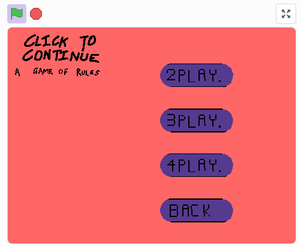
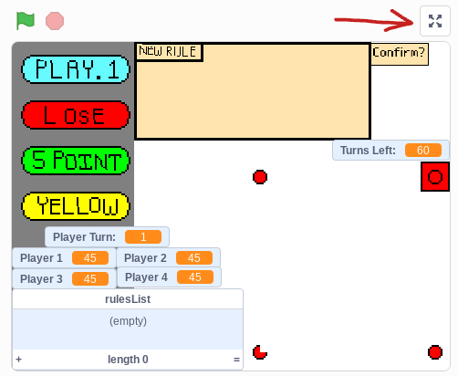

|
Home
What Is Simon Doing?
Turabout Phising: An Ace Attorney Game
Click to Continue
|
|
|
CLICK TO CONTINUE A GAME OF RULES
Play the only game where the rules are completely dependent on your actions.
Features a dynamic turn amount, playgrid, points balancing, and a completely original award-winning soundtrack. |
 |
|  | |
| Easy to learn, hard to master - Totallyrealmagazine.com (Starred review) |
Even when I beat my friends horribly, they laugh and say 'good game'! - Mid Sigher |
Play it once and you'll wake up the next day, face on your laptop. - Videogames.org (Starred review) |
You can purchase here!